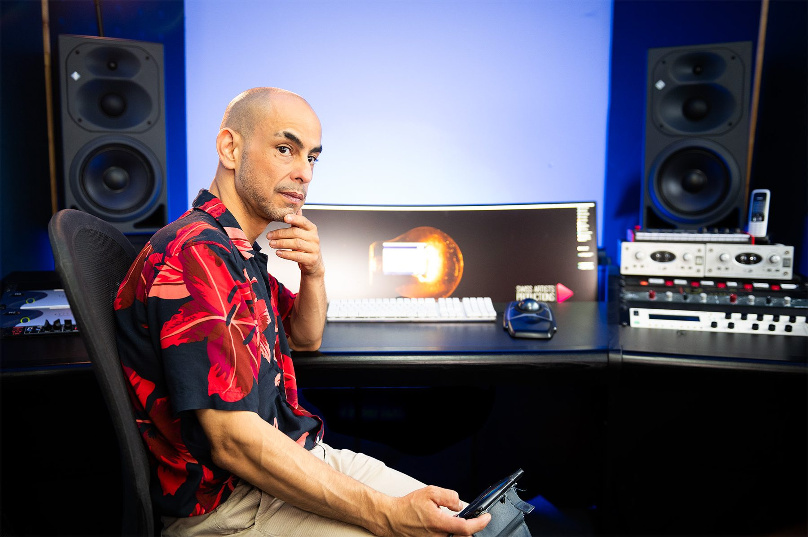
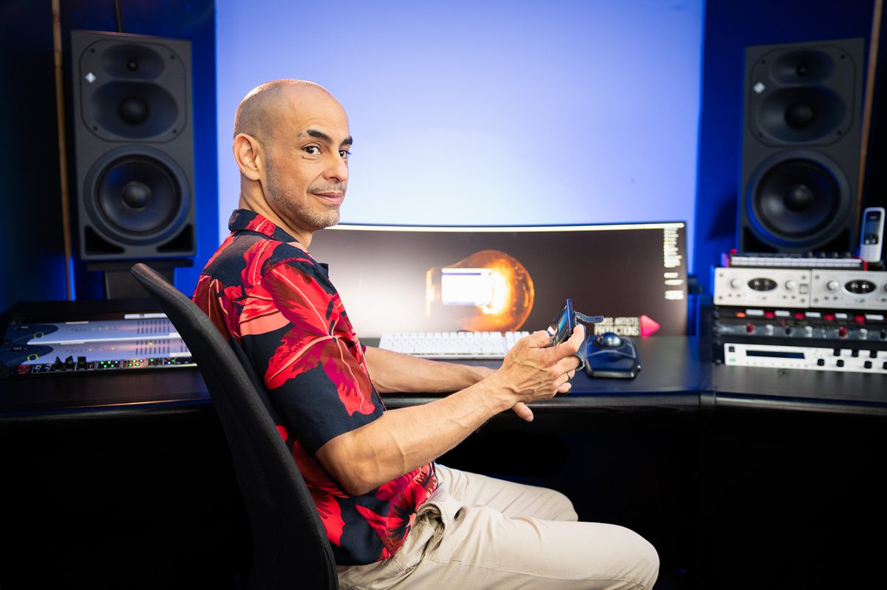

Available · position, contract or assignment
I design and lead your projects, from strategy to delivery.
Audiovisual and digital project managerVisibility and marketing manager
Expertise
- Leading audiovisual and digital projects
- Communication strategy and growing visibility
- Designing and coordinating multimedia set-ups
- Production management and operational coordination
- Experience30 years
- LocationVaud, Switzerland
- LanguagesFrench, English
- NationalitySwiss
Profile
The link between management, teams and the audience.
I frame projects, bring international teams together and deliver reliable results, on time. My dual background, technical and managerial, lets me talk to a board as easily as to a control room, and turn a communication goal into concrete content.
01
End-to-end project management
Specifications, budget, suppliers, schedule, commissioning: three audiovisual infrastructures delivered, including a radio and TV channel.
02
Communication and digital content
I support SMEs with their communication: films, videos, content for the web and social media.
03
An international career
London, Paris, Marrakech, Montreux: teams and artists from all over the world, in French and in English.

Career at a glance
Milestones.
- 2000 – todaySowatt Music SàrlCommunication for SMEs, video, record label, music production, artist management, sound and image production studio
- 2026 – todayLoreto1 Trading SAAdministration and visibility manager for this real estate company
- 2022 – 2025M Le MediaBuilt a radio and TV channel, from design to broadcast
- 2015 – 2017“26 minutes” · Les Productions 360Audio mixing and final mastering of the show, from the pilot onwards
- 2009 – 2017The Hana Road Music GroupDesign of an audio and multimedia production complex. Recordings: Van Morrison (with Bob Rock), Larry Graham
- 2007 – 2020Dorier · Winkler · Illumination · Media One Group · Rouge TVSound and video for events and TV
- 1999 – 2007Mutt Lange · Sully SoundStudio and personal management: Céline Dion, Britney Spears, Shania Twain
- 1994 – 1999London · Paris · MarrakechStudios, TV post-production, production centre